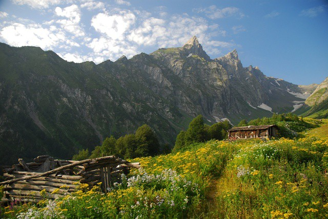

ამბროლაური არის მცირე, თუმცა მნიშვნელოვანი ქალაქი დასავლეთ საქართველოში, რომელიც მდებარეობს რაჭის რეგიონში, რიონის ხეობაში. იგი წარმოადგენს რაჭა-ლეჩხუმისა და ქვემო სვანეთის ადმინისტრაციულ ცენტრს. ქალაქი ცნობილია თავისი გამორჩეული ბუნებით, სუფთა ჰაერით, მთიანი ლანდშაფტებითა და კულტურული ტრადიციებით. განსაკუთრებით აღსანიშნავია ადგილობრივი მეღვინეობა — აქ იწარმოება ცნობილი ღვინო ხვანჭკარა, რომელიც რეგიონის ერთ-ერთ მთავარ სიმბოლოდ ითვლება. ამბროლაური ისტორიულად მცირე სავაჭრო და ადმინისტრაციული ცენტრი იყო, თუმცა დღეს მისი მნიშვნელობა უფრო მეტად ტურისტულ და კულტურულ პოტენციალზეა დამყარებული. მიუხედავად ამისა, ქალაქის განვითარება გარკვეული სირთულეებით არის შეზღუდული.